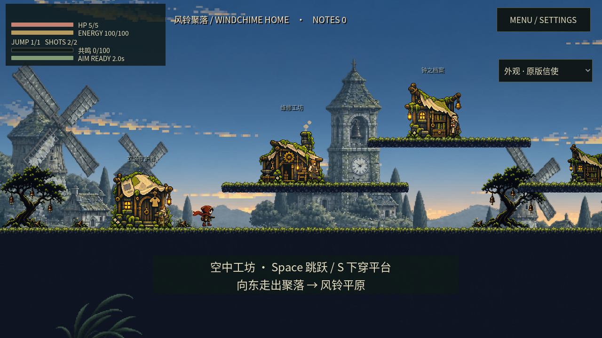
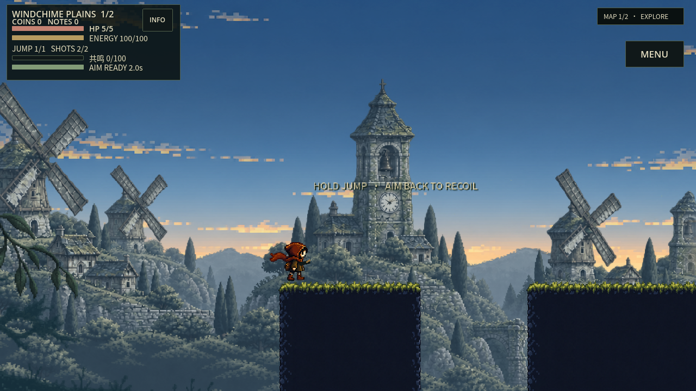
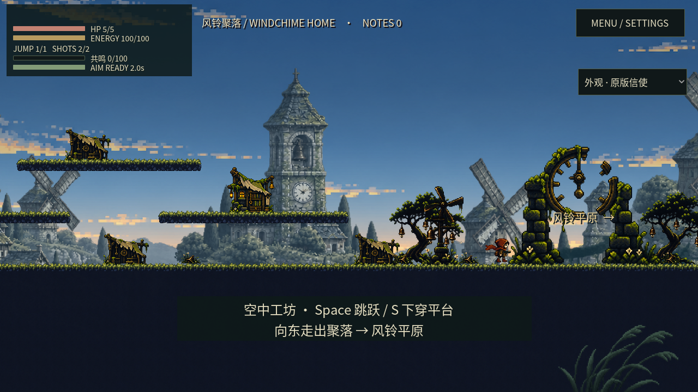
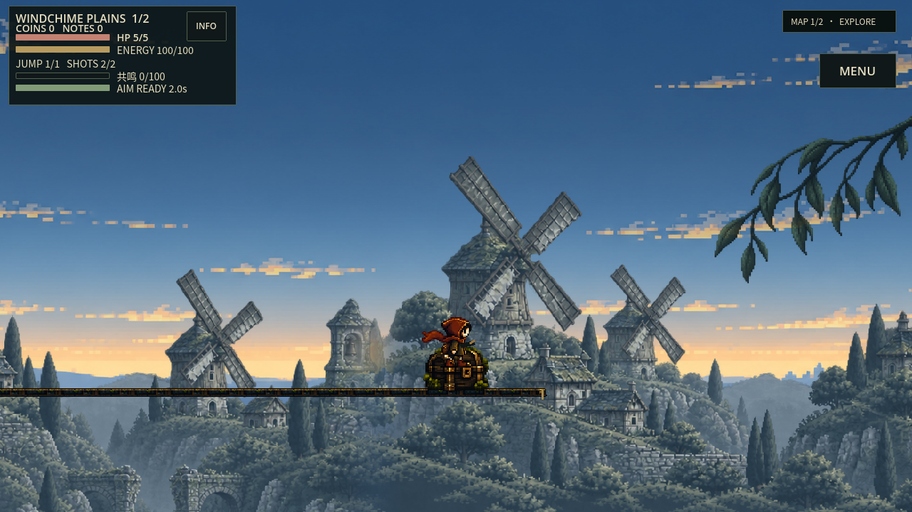
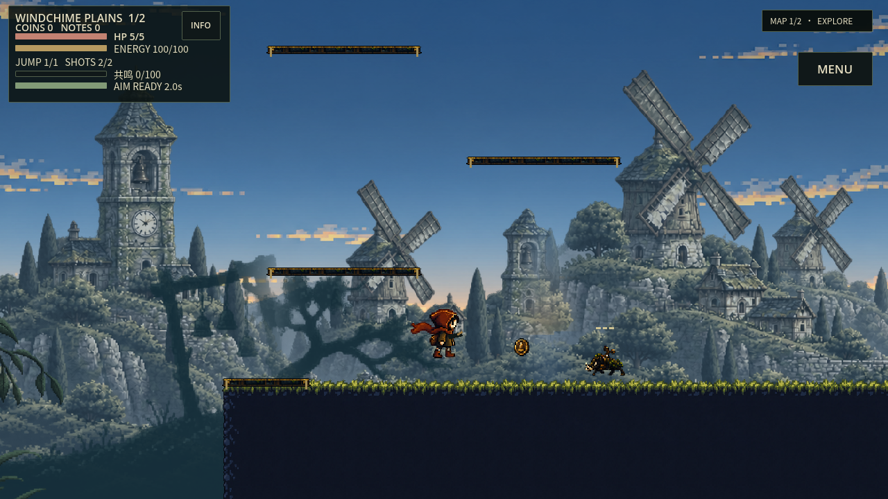
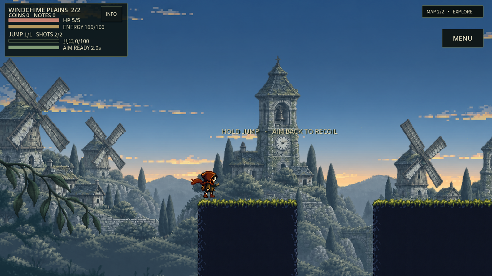
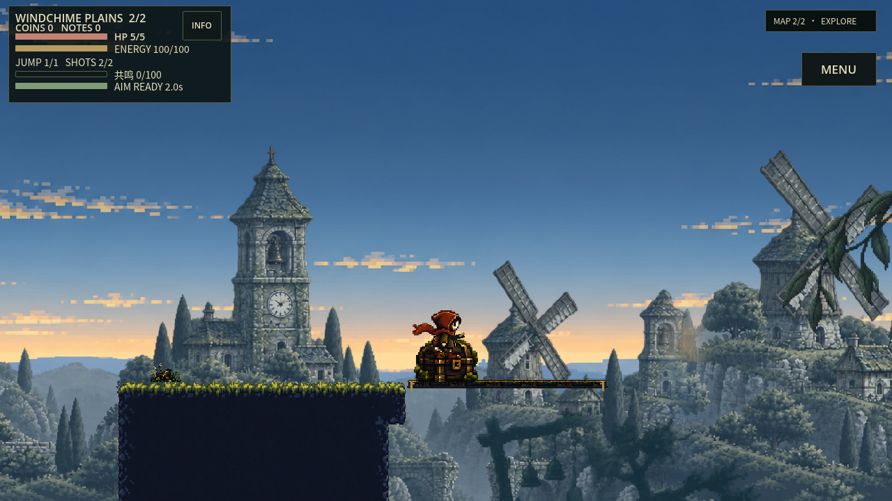
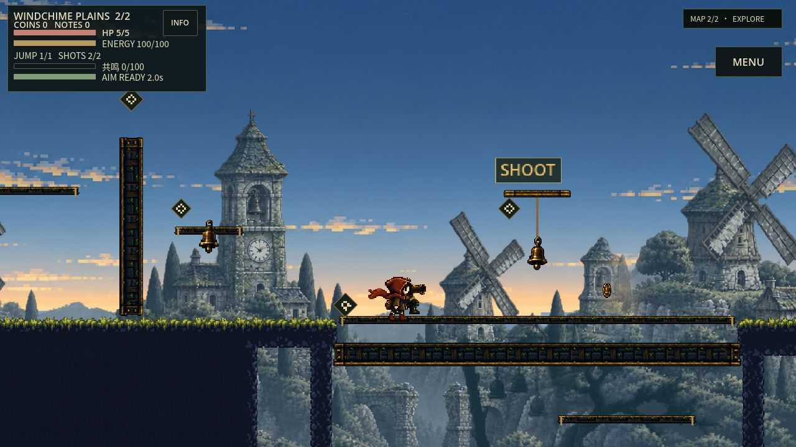
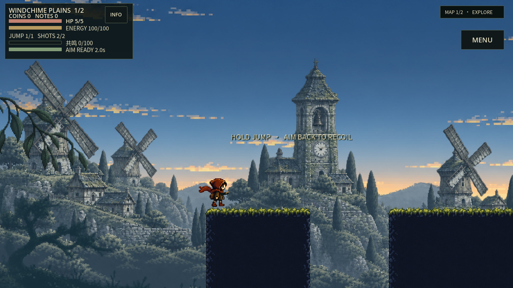
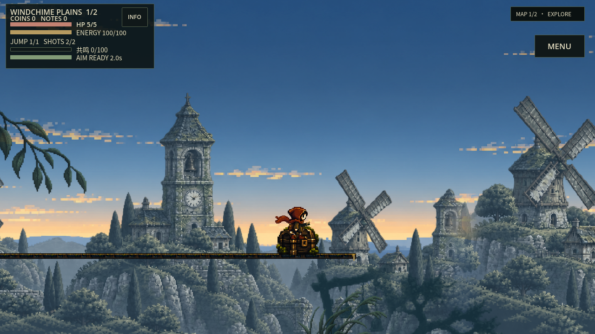

正式家园与平原的真实Godot画面：扩大中景石村、三座风车和两座钟铃塔，保留木石细节与冷灰空气透视；前景改用高细母版，稀疏侧枝、下角芦苇，近距离视差与轻微风动。保留人物、弹道、平台边缘、机关奖励和HUD的完整遮挡保护。
这是视频与实机图评审页，不是可操作试玩。前12秒为家园真实输入走跳，后两段各6秒为两张平原地图连续相机诊断，角色留在出生区，不能当路线通关。before来自上一轮同镜头/Seed，启动时刻和角色姿态不同；没有同输入before电影。
下载24秒实机短片 · 30镜头Seed/Manifest · 录制轨迹 · 前景采样审计
运行源码 4a41fd729ed06e6806826bf97ded3be5c9c817ed；before基线 059618d41f43814e431cb8a7632d06083336e12e。30镜头有21个显示前景，其余留白或保护隐藏；现有景层450项检查0失败，未跑完整CI。仍需改进大钟塔在不同Seed的重复、个别低处密度与枝叶显隐过渡；美术、真机性能和用户评价待确认。











上一轮评审页 · 原可玩站容量/新仓库权限阻挡仍在，本页不以旧包冒充新版本。